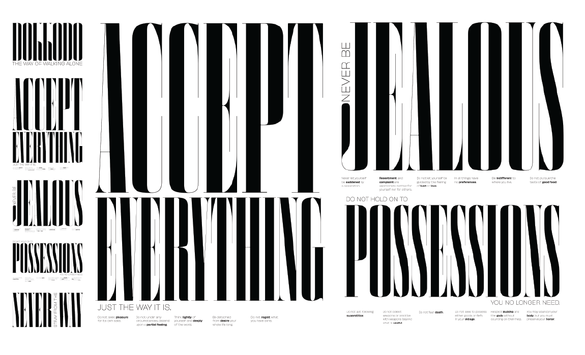
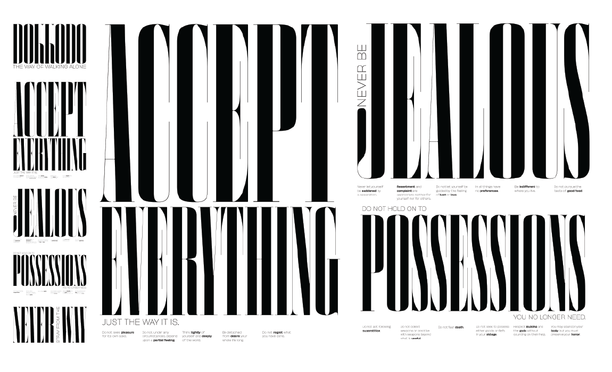

Dokkōdō:
The Way
of Walking Alone
“Dokkōdō” is the last testament of the famous Tokugawa-era rōnin Miyamoto Musashi, composed on his deathbed. The manifesto's title can be translated as “The Way of Walking Alone”. In 21 aphoristic precepts, “Dokkōdō” admonishes the reader to achieve happiness by embracing a stoic life of ascetic detachment. In designing and setting this text I set out to make a document that could be read normally in the hands and displayed in a manner similar to a traditional Japanese hanging scroll. The display typeface, Smoosh, accentuates the piece's verticality while emphasizing the assertive authority of Miyamoto's pronouncements.


 
